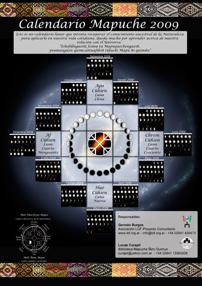

Serie artística · 2005–presente
Calendario Sur
Trece lunas para el hemisferio sur
I — Origen y trayectoria
Una colaboración que nació del territorio
"Este es un aporte para pensar un calendario propio para el hemisferio sur. Para los seres que aquí habitamos y buscamos una relación más armónica con nuestro entorno. Una forma simple de autoafirmación."
El Calendario Sur nace en 2005 de la colaboración entre Germán Burgos y Lucas Curapil, peñí mapuche de Bariloche e integrante del Centro de Educación Mapuche "Quimel Tuhun Mapuche Zungun". Lucas aportaba el conocimiento profundo de la cosmovisión mapuche; Germán la visión artística y conceptual. Juntos crearon el Calendario Mapuche Quimün — Conocimiento de la Gente de la Tierra.
Con el tiempo surge una pregunta más ambiciosa: ¿cómo hacer un calendario que no sea utilitario, sino una herramienta de reconexión? Un calendario anclado en el territorio, en los ciclos reales del hemisferio sur, que devuelva a la gente la capacidad de leer la naturaleza.
Cuando Lucas se retira del proyecto con respeto mutuo, Germán continúa bajo la marca Calendario Sur — reforzando la idea de un calendario específico para el hemisferio sur. Es un gesto de honestidad: habitar la propia complejidad genealógica mientras se sostiene un trabajo de resistencia epistémica.
II — La estructura
El año comienza en junio
El Calendario Sur no comienza en enero. Comienza en el Chirpantu — el año nuevo mapuche —, en el solsticio de invierno del hemisferio sur, entre el 20 y el 24 de junio. Desde ese momento, el año se estructura en trece lunas hasta el próximo solsticio.
28 días por luna
Cada luna tiene veintiocho días con sus cuatro cambios marcados y nombrados en mapuzugun.
13 lunas por año
Desde el Chirpantu hasta el próximo solsticio de invierno. Cíclico, no lineal.
Espacio para anotar
Cada página deja lugar para que quienes lo usan registren sus propios ciclos y observaciones.
III — Contexto histórico
El calendario gregoriano y la separación de los ciclos naturales
El calendario gregoriano, implementado globalmente a través de procesos coloniales, impuso una estructura temporal que desvinculó a las poblaciones de sus territorios y ciclos naturales locales. Basado en divisiones arbitrarias del año —doce meses de longitud variable—, perdió la conexión con los ciclos lunares que estructuraban los conocimientos ancestrales sobre siembra, cosecha, medicina y reproducción.
La hegemonía de esta temporalidad no fue accidental: fue parte de un proyecto más amplio de homogeneización cultural y control territorial. Al imponer un único calendario "universal", se buscaba desacreditar y reemplazar los sistemas de conocimiento locales —incluyendo los calendarios lunares mapuche, que habían sostenido durante milenios una relación integral con el territorio.
El Calendario Sur recupera esa lógica temporal perdida. No es un rechazo al conocimiento occidental, sino una restitución de saberes que fueron activamente suprimidos y que siguen siendo vitales para entender y habitar el territorio.
IV — Ediciones documentadas
Veinte años de materialización
Cada edición responde a los ciclos reales del año en que fue producida. Las fechas lunares son específicas — cada calendario es único e irrepetible.

2005
Mapuche Quimün
Primera edición. El kultrun como símbolo central desde el inicio. Germán Burgos + Lucas Curapil.

2009
Calendario Mapuche
Primera rueda lunar circular. Las cuatro fases nombradas en mapuzugun. Germán Burgos + Lucas Curapil.

2013–2014
Calendario Mapuche Lunar
Texto introductorio en mapuzugun. Última edición en colaboración con Lucas Curapil.

2015–2016
Calendario Mapuche Lunar
Consolidación del formato de rueda con orientación cardinal completa. Fondo cosmos azul.

2020–2021
Calendario Lunar
Primera edición en solitario. Nace la frase fundacional sobre el hemisferio sur.

2021–2022
Calendario Sur
Nace la marca. Fondo cosmos verde y azul. Primera edición bajo la identidad Asociación LOF.
Primer Calendario Sur
2022–2023
Calendario Sur
Fondo paisaje patagónico — lago y cordillera. La geografía del territorio como sostén de la cosmovisión.
V — Serie de láminas complementarias
Trece puertas de entrada a la cosmovisión
En paralelo al calendario, se desarrolló una serie de trece láminas temáticas que profundizan en distintos aspectos de la cosmovisión mapuche. Cada lámina es autónoma y puede usarse en talleres, espacios educativos o como obra individual.

01
Meli Ñom Mapu
4 Puntos Cardinales

02
Meli Chroi Chripantu
4 Estaciones

03
Meli Huichran Mapu
4 Elementos

04
Meli Chroi Monguen
4 Etapas de la Vida

05
Meli Chroi Quihien
4 Cambios de la Luna

06
Quihien Ñi Quimün
13 Ciclos Lunares
07
Rueda de los 13 Ciclos
Calendario circular completo

08
Üñoi Chripantu
Vuelta del Año Solar

09
Pelon Antüg
Momentos del Día

10
Huall Mapu Ñi Nehuen
Influencia del Universo

11
Nguellipun Zungun
Conocimientos de la Rogativa

12
Pu Cullin Ca Pu Amünca
Animales y Plantas

13
Anumca Ca Llahueñ
Árboles y Plantas Medicinales
VI — Nota sobre el grafemario
La escritura del mapuzugun en el Calendario Sur
Nota técnica y conceptual
Las primeras ediciones del Calendario Sur fueron desarrolladas usando el Grafemario Antinao, una propuesta de escritura del mapuzugun desarrollada por Nicasio Carmelo Antinao, lingüista mapuche de la Universidad Nacional del Comahue. Este grafemario responde a la fonética del mapuzugun hablado en el Puel Mapu — el norte patagónico argentino — y fue la herramienta utilizada por Lucas Curapil en sus talleres de lengua mapuche en la región.
Las ediciones más recientes y las próximas producciones migran al Grafemario Ranileo, desarrollado por Anselmo Raguileo, que se ha consolidado como el sistema más utilizado en espacios académicos y de difusión cultural mapuche a nivel continental. Esta transición permite que el Calendario Sur llegue a más personas sin perder su rigor conceptual ni su anclaje territorial.
Continuidad en AMUTUY
Del papel a la interfaz
El Culchrung —el kultrun, tambor sagrado mapuche— aparece ya en la primera lámina del Calendario Sur como "instrumento y símbolo sagrado". Era imagen. Era conocimiento en papel.
En AMUTUY, el kultrun deja de ser imagen para convertirse en interfaz: un objeto físico que podés tocar, que responde, que convoca a escuchar el territorio desde adentro. El Calendario Sur y AMUTUY son dos momentos de un mismo proyecto — materializar la cosmovisión mapuche en formas que la gente pueda habitar, no solo leer.